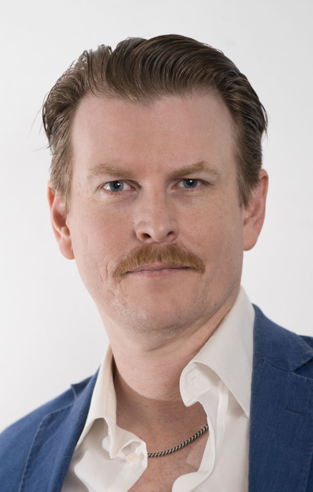

CAPSTONE

Meet the Team
Hover a headshot to read about each team member.
What is a Capstone
What is an MBA Capstone?
The MBA Capstone Consulting Project is the culminating experience for the MBA program. The Capstone is timed to be at the end of the 2-year program and is designed to put the students’ newly acquired skill set to work, solving real business problems for real clients.
What is the scope for PSU’s MBA Capstone projects?
Projects have four (or in some cases three) MBA students for two terms. This means about 20 weeks, at about 6–8 hours per person per week. Thus, the projects are ~500–600 hours. They are significant projects that can deliver real benefits for clients.
What are typical projects?
Projects can be broad such as a Strategic Plan, or a Sustainability Plan. Other projects are focused on a specific functional area such as Operations or the Supply Chain, the HR pipeline for improving recruiting and retention, building a financial model, or developing a marketing or go-to-market plan. Several example projects are described below.
What is delivered in the end?
Every project delivers a management-level presentation that centers on key findings and actionable recommendations. Additional deliverables vary, depending on the client’s needs. Sometimes the MBA team produces a major report. Deliverables often include annotated spreadsheets, or other tools and training. The content is considered the property of the client. The project is “work for hire” and is not shared with other organizations.
What is the client role?
Clients provide a company sponsor who will work with the student consulting team to help establish the project scope and act as a primary contact at the company. Client organizations are expected to provide the team with a company overview, details of the proposed project, access to key people and information, and feedback during the project. The Client should expect to provide several hours of support during the first month, and a few hours each month thereafter.
When are the MBA Capstone Projects?
Most projects start in January and run through June (two terms). A few projects start in April and run through the summer. Projects are generally secured about 2 months prior to the start.
How do we secure a team?
Many student teams will secure a project on their own, based on team interests. We maintain a list of approved projects and share these with teams based on strengths and interests and timing. Not all projects fit the Capstone Consulting model; in those cases we are happy to refer you to the Undergraduate Capstone Director.
How do I apply for project approval?
You can find the Capstone Application, which also includes some of the policies that apply to the projects, here: forms.gle/WD6Fqxz3W78N4uf58
What makes a good Capstone project?
We are looking for projects in organizations with strong project sponsors who can meet with the students regularly, and can provide students with the information (financial, customer, etc.) necessary to add value to the organization.
While we accept projects from developed nonprofits and government agencies, MBA Capstone projects are typically not designed for early-stage entrepreneurial ventures, as students require access to historical company, customer, and financial data. We also accept projects for small companies, but only when the company is at a stage where they will be able to take advantage of the student recommendations — which may include hiring or other investments. Because these projects are designed to be applied, rather than academic, the recommendations are designed to reflect the client’s capabilities and resources.
Projects must be substantial enough for a team (supported by an advisor) to complete over 20 weeks. But they also need to be limited in scope to make sure the teams can complete their research and provide recommendations in that time frame.
What is the approval process after an application is submitted?
For projects starting in Winter term, we will begin reviewing applications over the summer and will reach out to you directly with questions or to schedule time to discuss your project. If a project is not approved, it will be shared with the Undergraduate Capstone Director if it seems like a good fit.
If you are working directly with a student team to develop a project, we will communicate with them to discuss the project before following up with you. If your project is approved, and you are not currently working with a student team, it will be shared with students in October–November. Because we have a limited number of teams, not all approved projects are selected by Capstone teams.
What costs are involved?
If there are any direct costs (rare) such as distant travel, the client needs to approve and pay such costs associated with the project. All project expenditures must have prior approval from the client, and students will provide a receipt for each expense.
At the end of the project, some companies who participate in this program choose to make voluntary donations of $500 to $5,000+ to the MBA program through the PSU Foundation. These tax-deductible donations support student professional development activities and events, which improve the quality of education for our business students. We also may have opportunities for sponsoring events; please contact the Capstone Director if you are interested in exploring this.
A note about NDAs
While our students understand the need for confidentiality, Non-Disclosure Agreements can be a barrier to having a project accepted. PSU has a standard NDA, which is the only one that is approved by the University for these projects. Clients requesting a specific NDA must share that in advance, so that students can decide whether or not to accept that project; because students are not represented by counsel, they have the choice to decline a project that requires a complex or overly broad NDA. If an NDA is required, we recommend that it is a simple short form that includes an explicit description of what information to be provided by the client is designated as confidential. Because Client NDAs cannot be signed by a PSU employee on behalf of the University, the NDA must also include an explicit exception that allows students to share deliverables with Capstone Faculty.
Project examples
Most projects are confidential to the client, so while we cannot disclose them specifically, below are some generalized examples:
Supply Chain & Logistics
- Boutique chocolate manufacturer — 3-year growth strategy to maximize existing production capacity. The project developed a roadmap for distribution and international sourcing.
- Renewable energy manufacturer — the Capstone team developed a stocking & service program for high-value components to reduce customer down time.
- Major retailer — the company needed to improve its delivery performance. The work analyzed the flow of product through the warehouse, distribution, and shipping network. The team recommended SOP changes that improved the performance.
Operations
- Industrial manufacturer — the manufacturer of building supplies wanted to improve the efficiency of its plant. The Capstone team completed value mapping to capture the “current state,” then a thorough research of best practices, and then developed a “future state” with prioritized recommendations reflected in the expected financial and operational benefits.
Financial
- Wholesale bakery — a thorough analysis of the cost structure by product line and delivery route to analyze and improve the profitability of the company.
- Brewery — the company needed to understand whether it was best to outsource or bring operations in-house. The Capstone team did a deep make-versus-buy analysis by researching and then modeling various operational scenarios.
- Government agency — the team developed a risk management framework for the agency’s major initiatives.
Mergers & Acquisitions
- Software company — an analysis of the acquisition activity that the company had undergone. The work identified best practices and recommendations for improvements.
Business Development
- International NGO — the agency wanted to expand its micro-financing service and develop a more efficient system for processing applications. The recommendations included marketing programs to expand the geographic reach of the program, and recommendations to staff and streamline the application process.
- Web apparel retailer — the project developed a plan to expand internationally. The work focused on determining the “where” (which countries), the “how” (logistics), and the “who” (who in the company would execute the plan).
- Start-up fintech company — a go-to-market plan to validate & refine the business model and detail a launch.
Human Resources
- Multi-site cafes — the project developed an analysis and recommendations that furthered employee alignment and retention in the recruiting and onboarding processes.
- Food manufacturer — the Capstone team developed a strategic plan to advance the HR process for the company’s operations, designed to improve employee alignment and retention in the recruiting and onboarding processes.
Marketing
- Insurance company — developed recommendations for an improved customer experience that results in an increase in sales and retention.
- Software company — developed positioning and pricing models for a new set of the company’s software services.
Non-profit Development
- Environmental organization — delivered a detailed plan for corporate development. This included evaluating and proposing events, outreach/marketing plans, sponsorship, and funding.
- School district — developed an implementation plan & ROI model for rolling out a large Chromebook program.
Strategic Plan
- B Corp organization — the Capstone developed a strategic plan to guide the recruitment and service of metro Portland B-Corp companies.
Sustainability
- Fruit processor — the team developed the company’s first sustainability plan, focused on the processing and supply chain portions of the business.
- Private equity firm — the team developed an environmental framework for the firm and its companies. This included a baseline analysis for each company.
For more information, contact the MBA Academic Director, 503-327-4278, sorenset@pdx.edu
Lee Fisk
US Army veteran (Captain, Air Defense) with 7 years in operations planning and training. Former UI/UX designer, brand manager, and marketing director for the video-game startup The Stomping Land ($4.2M in sales). PMP certified.
Brandi Swiderski
Dual MBA and MS in Applied Data Science, with a bachelor’s in Supply & Logistics Management and in Business Technology & Analytics. 18 years of client-facing sales and leadership as a cosmetologist, plus nonprofit work as a content specialist and scholarship reviewer for the Clatsop Community College Foundation. Served on the PSU Student Activities and Leadership Advisory Board.
Catherine Cardoza
Bilingual (Spanish) operations and administrative expert. An MBA candidate with a Fine Arts background, Cathy worked in graduate admissions at the Pacific Northwest College of Art and as a curatorial assistant at Oregon College of Art and Craft.
Jon Livingston
Telecommunications architect with 14 years of experience. MBA candidate with a focus on supply chain management. Bachelor’s in Information Systems Management from Portland State University. Once upon a time, a humble airman in the USAF.